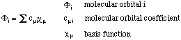

Hartree-Fock Theory
In Hartree-Fock (HF) theory the energy of a system
is given as a sum of five components:
EHF = ENN + ET + Ev + Ecoul +
Eexch
The nuclear-nuclear repulsion ENN describes the electrostatic repulsion between
the nuclei and is independent of the electron coordinates. In time-independent HF theory, the
kinetic energy of the nuclei is not, but the kinetic energy of the electrons ET
is considered. Together with the nuclear-electron attraction energy Ev it depends
on the coordinates of one electron. The classical electron-electron Coulomb repulsion energy
Ecoul and the non-classical electron-electron exchange energy Eexch
depend on the coordinates of two electrons. Calculation of these last two terms constitutes
the main effort in HF calculations and is also responsible for the unfavorable formal scaling
of computational effort as the fourth power of basis functions used for the description of
the wavefunction. The particular assumption made in HF theory is that each electron feels
the other electrons only as an average charge cloud, but not as individual electrons.
The molecular electronic wavefunction in HF theory is based on the
LCAO (=linear combination
of atomic orbitals) scheme describing each molecular orbital (holding one electron) as a
linear combination of basis functions (usually located at the nuclear center):

The molecular orbital coefficients describe the contribution of each of the basis functions
to a given molecular orbital. The overall electronic wavefunction of the system is constructed
as an antisymmetrized product of the molecular orbitals (the
Slater determinand) in
order to fulfill the
Pauli exclusion principle. Since the optimal shape of one molecular
orbital depends on the shape of all the other occupied molecular orbitals, the optimization
of the overall wavefunction is achieved in an iterative manner, varying the molecular
orbital coefficients until no further changes in the overall wavefunction occur. The
direction of the variation of MO coefficients is guided by the
variational principle
stating that an approximate wavefunction yields an energy of the system which is
higher than the energy obtained from the exact wavefunction. In other words: in order
to arrive at the most favorable wavefunction the MO coefficients must be varied such
that the energy of the system becomes as low as possible.
The basic steps performed in HF energy calculations will be illustrated using formaldehyde
in its C2v structure as example. Please observe that the output obtained from HF
calculations will vary dramatically depending on whether normal (#) or extendet (#P)
output is specified:
#P HF/STO-3G scf=tight
HF/STO-3G formaldehyde
0 1
C1
O2 1 r2
H3 1 r3 2 a3
H4 1 r3 2 a3 3 180.0
r2=1.21672286
r3=1.10137241
a3=122.73666566
| |
 |
After reading in the geometry of the system and determining its symmetry properties,
the actual first step of Hartree-Fock calculations consists in choosing a basis set
in which the electronic wavefunction can be expanded. This is done in
link 301 of the program, usually by calling a predefined set of basis
functions from a library. In the current case we are using the standard STO-3G
basis set containing three Gaussian functions (primitives) to describe each Slater-type "atomic"
orbital. Sufficient basis functions are used to describe the core and valence
orbitals of the system. For formaldehyde there will be one basis function for the
1s orbitals of hydrogen and five basis functions each to describe the 1s2s2px2py2pz
orbitals of carbon and oxygen. Overall this amounts to 12 basis functions. As each
of these basis functions is described by three Gaussian type functions,
we have 36 primitive Gaussians for the system.
(Enter /scr1/g03/l301.exe)
Standard basis: STO-3G (5D, 7F)
There are 7 symmetry adapted basis functions of A1 symmetry.
There are 0 symmetry adapted basis functions of A2 symmetry.
There are 2 symmetry adapted basis functions of B1 symmetry.
There are 3 symmetry adapted basis functions of B2 symmetry.
Integral buffers will be 262144 words long.
Raffenetti 1 integral format.
Two-electron integral symmetry is turned on.
12 basis functions, 36 primitive gaussians, 12 cartesian basis functions
8 alpha electrons 8 beta electrons
nuclear repulsion energy 31.0872308470 Hartrees.
IExCor= 0 DFT=F Ex=HF Corr=None ExCW=0 ScaHFX= 1.000000
ScaDFX= 1.000000 1.000000 1.000000 1.000000
IRadAn= 0 IRanWt= -1 IRanGd= 0 ICorTp=0
NAtoms= 4 NActive= 4 NUniq= 3 SFac= 2.05D+00 NAtFMM= 60 Big=F
Leave Link 301 at Mon Nov 22 15:27:09 2004, MaxMem= 6000000 cpu: 0.1
Aside from basis set considerations link 301 also reports the number of electrons
(here 16 electrons; 8 alpha and 8 beta spin electrons) and the nuclear
repulsion energy ENN in atomic units (Hartree). Subsequent links 30x (x=2,3, . . )
are responsible for the computation of one and two electron integrals.
(Enter /scr1/g03/l302.exe)
NPDir=0 NMtPBC= 1 NCelOv= 1 NCel= 1 NClECP= 1 NCelD= 1
NCelK= 1 NCelE2= 1 NClLst= 1 CellRange= 0.0.
One-electron integrals computed using PRISM.
One-electron integral symmetry used in STVInt
NBasis= 12 RedAO= T NBF= 7 0 2 3
NBsUse= 12 1.00D-06 NBFU= 7 0 2 3
Leave Link 302 at Mon Nov 22 15:27:10 2004, MaxMem= 6000000 cpu: 0.5
(Enter /scr1/g03/l303.exe)
DipDrv: MaxL=1.
Leave Link 303 at Mon Nov 22 15:27:11 2004, MaxMem= 6000000 cpu: 0.0
A first guess for the wavefunction of the system is made in link 401. While earlier versions of
Gaussian used the semiempirical INDO method to derive a first guess of the wavefunction,
the Harris density functional method is used more recently. The orbital symmetries are printed
for the occupied and the empty (virtual) orbitals.
(Enter /scr1/g03/l401.exe)
Harris functional with IExCor= 205 diagonalized for initial guess.
ExpMin= 1.69D-01 ExpMax= 1.31D+02 ExpMxC= 1.31D+02 IAcc=1 IRadAn= 1 AccDes= 1.00D-06
HarFok: IExCor= 205 AccDes= 1.00D-06 IRadAn= 1 IDoV=1
ScaDFX= 1.000000 1.000000 1.000000 1.000000
Harris En= -112.417169397061
Initial guess orbital symmetries:
Occupied (A1) (A1) (A1) (A1) (B2) (A1) (B1) (B2)
Virtual (B1) (A1) (B2) (A1)
The electronic state of the initial guess is 1-A1.
Leave Link 401 at Mon Nov 22 15:27:12 2004, MaxMem= 6000000 cpu: 0.3
The actual Hartree-Fock energy calculation is performed by link 502 in an
iterative manner until self consistency of the wavefunction (self consistent field
(SCF) calculation) is achieved. At
the beginning of link 502 the convergence criteria (rms and max. density changes)
are listed together with the default number of iterations (here 64). The most important
information listed for each SCF cycle are the actual energy of the electronic
subsystem (that is, the total energy without the core-core repulsion energy) as
e.g. E= -112.352697484853, and the energy change with respect to the previous
SCF iteration, e.g. Delta-E= -0.017123861810. All energies are given in atomic
units.
(Enter /scr1/g03/l502.exe)
Closed shell SCF:
Requested convergence on RMS density matrix=1.00D-08 within 128 cycles.
Requested convergence on MAX density matrix=1.00D-06.
Requested convergence on energy=1.00D-06.
No special actions if energy rises.
Using DIIS extrapolation, IDIIS= 1040.
Integral symmetry usage will be decided dynamically.
Keep R1 integrals in memory in canonical form, NReq= 422883.
IEnd= 18774 IEndB= 18774 NGot= 6000000 MDV= 5995234
LenX= 5995234
Symmetry not used in FoFDir.
MinBra= 0 MaxBra= 1 Meth= 1.
IRaf= 0 NMat= 1 IRICut= 1 DoRegI=T DoRafI=F ISym2E= 0 JSym2E=0.
Cycle 1 Pass 1 IDiag 1:
E= -112.335573623044
DIIS: error= 3.88D-02 at cycle 1 NSaved= 1.
NSaved= 1 IEnMin= 1 EnMin= -112.335573623044 IErMin= 1 ErrMin= 3.88D-02
ErrMax= 3.88D-02 EMaxC= 1.00D-01 BMatC= 1.97D-02 BMatP= 1.97D-02
IDIUse=3 WtCom= 6.12D-01 WtEn= 3.88D-01
Coeff-Com: 0.100D+01
Coeff-En: 0.100D+01
Coeff: 0.100D+01
Gap= 0.612 Goal= None Shift= 0.000
GapD= 0.612 DampG=2.000 DampE=0.500 DampFc=1.0000 IDamp=-1.
RMSDP=1.40D-02 MaxDP=6.46D-02 OVMax= 0.00D+00
Cycle 2 Pass 1 IDiag 1:
E= -112.352697484853 Delta-E= -0.017123861810 Rises=F Damp=F
DIIS: error= 1.00D-02 at cycle 2 NSaved= 2.
NSaved= 2 IEnMin= 2 EnMin= -112.352697484853 IErMin= 2 ErrMin= 1.00D-02
ErrMax= 1.00D-02 EMaxC= 1.00D-01 BMatC= 1.32D-03 BMatP= 1.97D-02
IDIUse=3 WtCom= 9.00D-01 WtEn= 1.00D-01
Coeff-Com: 0.502D-01 0.950D+00
Coeff-En: 0.000D+00 0.100D+01
Coeff: 0.452D-01 0.955D+00
Gap= 0.643 Goal= None Shift= 0.000
RMSDP=4.61D-03 MaxDP=1.69D-02 DE=-1.71D-02 OVMax= 0.00D+00
.
.
.
.
Cycle 9 Pass 1 IDiag 1:
E= -112.354347141204 Delta-E= -0.000000000001 Rises=F Damp=F
DIIS: error= 1.42D-08 at cycle 9 NSaved= 9.
NSaved= 9 IEnMin= 9 EnMin= -112.354347141204 IErMin= 9 ErrMin= 1.42D-08
ErrMax= 1.42D-08 EMaxC= 1.00D-01 BMatC= 2.72D-15 BMatP= 4.82D-13
IDIUse=1 WtCom= 1.00D+00 WtEn= 0.00D+00
Coeff-Com: -0.374D-07 0.186D-05 0.127D-04-0.740D-04 0.477D-03-0.300D-02
Coeff-Com: 0.194D-01-0.164D+00 0.115D+01
Coeff: -0.374D-07 0.186D-05 0.127D-04-0.740D-04 0.477D-03-0.300D-02
Coeff: 0.194D-01-0.164D+00 0.115D+01
Gap= 0.636 Goal= None Shift= 0.000
RMSDP=8.54D-09 MaxDP=3.94D-08 DE=-9.66D-13 OVMax= 0.00D+00
SCF Done: E(RHF) = -112.354347141 A.U. after 9 cycles
Convg = 0.8544D-08 -V/T = 2.0089
S**2 = 0.0000
KE= 1.113601121070D+02 PE=-3.271252835904D+02 EE= 7.232359349512D+01
Leave Link 502 at Mon Nov 22 15:27:16 2004, MaxMem= 6000000 cpu: 0.4
At convergence the total energy (now including the core-core repulsion energy)
is reported as E(RHF) together with the number of
SCF cycles required to reach convergence (here 9), the ratio of kinetic to potential
energy -V/T , the electronic kinetic energy ET
as KE, the electron-nuclear attraction energy
Ev as PE, and the sum of Coulomb and
exchange interaction energies Ecoul + Eexch as
EE. Further information on the converged wavefunction
is given by link 601:
(Enter /scr1/g03/l601.exe)
Copying SCF densities to generalized density rwf, ISCF=0 IROHF=0.
**********************************************************************
Population analysis using the SCF density.
**********************************************************************
Orbital symmetries:
Occupied (A1) (A1) (A1) (A1) (B2) (A1) (B1) (B2)
Virtual (B1) (A1) (B2) (A1)
The electronic state is 1-A1.
Alpha occ. eigenvalues -- -20.31271 -11.12507 -1.33744 -0.80775 -0.63291
Alpha occ. eigenvalues -- -0.54553 -0.44319 -0.35438
Alpha virt. eigenvalues -- 0.28199 0.62863 0.73441 0.91294
Condensed to atoms (all electrons):
1 2 3 4
1 C 4.736158 0.444579 0.372144 0.372144
2 O 0.444579 7.788267 -0.022449 -0.022449
3 H 0.372144 -0.022449 0.630937 -0.037118
4 H 0.372144 -0.022449 -0.037118 0.630937
Mulliken atomic charges:
1
1 C 0.074976
2 O -0.187948
3 H 0.056486
4 H 0.056486
Sum of Mulliken charges= 0.00000
Atomic charges with hydrogens summed into heavy atoms:
1
1 C 0.187948
2 O -0.187948
3 H 0.000000
4 H 0.000000
Sum of Mulliken charges= 0.00000
Electronic spatial extent (au): = 58.6695
Charge= 0.0000 electrons
Dipole moment (field-independent basis, Debye):
X= 0.0000 Y= 0.0000 Z= -1.5369 Tot= 1.5369
Quadrupole moment (field-independent basis, Debye-Ang):
XX= -10.4253 YY= -10.5461 ZZ= -11.3098
XY= 0.0000 XZ= 0.0000 YZ= 0.0000
Traceless Quadrupole moment (field-independent basis, Debye-Ang):
XX= 0.3351 YY= 0.2143 ZZ= -0.5494
XY= 0.0000 XZ= 0.0000 YZ= 0.0000
Octapole moment (field-independent basis, Debye-Ang**2):
XXX= 0.0000 YYY= 0.0000 ZZZ= 2.6823 XYY= 0.0000
XXY= 0.0000 XXZ= 1.6239 XZZ= 0.0000 YZZ= 0.0000
YYZ= 0.4668 XYZ= 0.0000
Hexadecapole moment (field-independent basis, Debye-Ang**3):
XXXX= -6.8834 YYYY= -14.5710 ZZZZ= -39.9089 XXXY= 0.0000
XXXZ= 0.0000 YYYX= 0.0000 YYYZ= 0.0000 ZZZX= 0.0000
ZZZY= 0.0000 XXYY= -3.8029 XXZZ= -7.7079 YYZZ= -8.2855
XXYZ= 0.0000 YYXZ= 0.0000 ZZXY= 0.0000
No NMR shielding tensors so no spin-rotation constants.
Leave Link 601 at Mon Nov 22 15:27:18 2004, MaxMem= 6000000 cpu: 0.8
This entails the symmetries of occupied and virtual orbitals (which may or may not
be identical to the symmetries listed for the wavefunction guess), the symmetry of
the electronic state of the system, orbital energies of all orbitals (in Hartree),
and essential results from a Mulliken population analysis. The components of various
multipoles (dipole, quadrupole . . ) are given at the end.
last changes: 22.11.2004, HZ
questions & comments to: zipse@cup.uni-muenchen.de